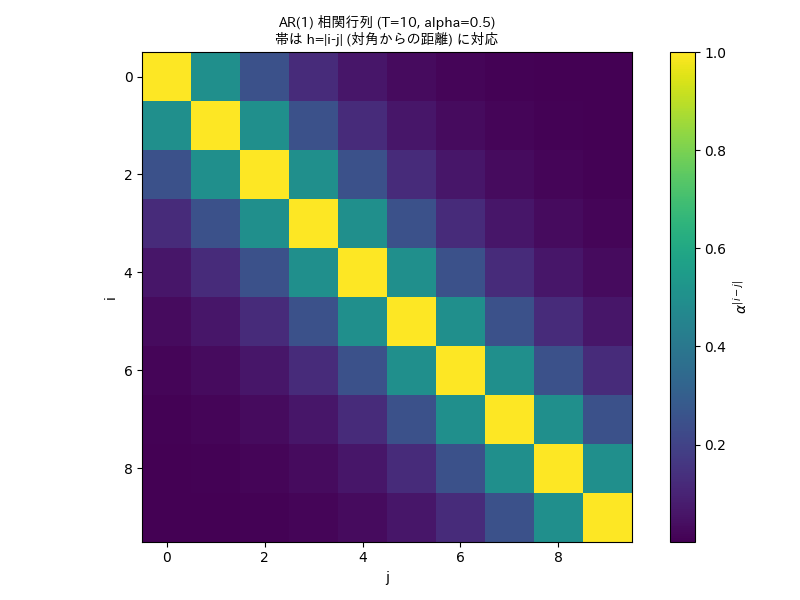
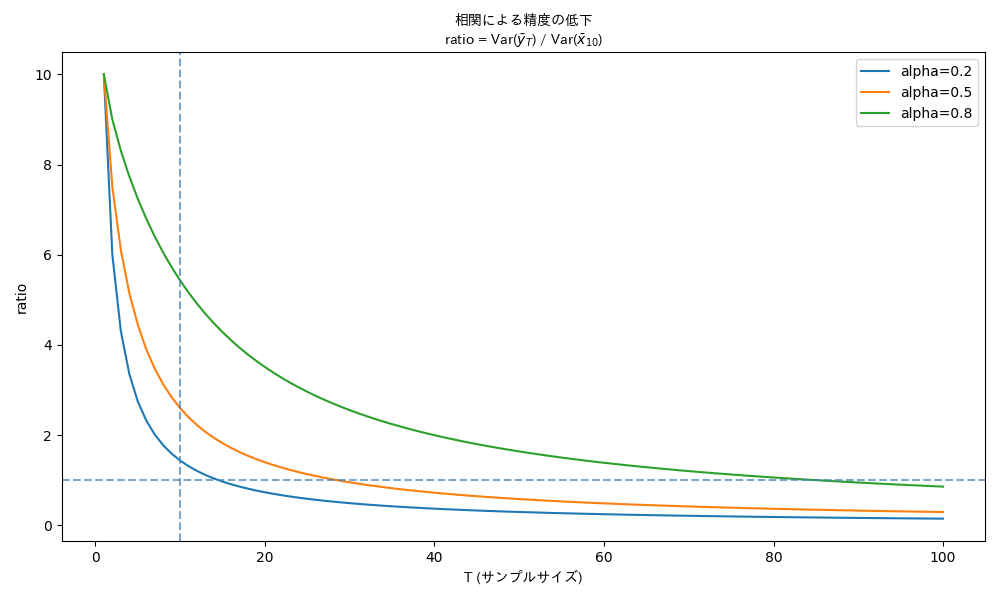

AR(1) プロセス解説
PBT最短回答（問12–14）
P（前提）
- AR(1)側: \( u_{t+1}=\alpha u_t+\varepsilon_{t+1},\ |\alpha|<1,\ \varepsilon_t\sim N(0,\sigma^2) \) （定常）
\( y_t=\mu+u_t, \quad \bar y_T=\frac1T\sum_{t=1}^T y_t \)
- iid側: \( x_i\stackrel{iid}{\sim}N(\mu,\sigma_u^2),\ \bar x=\frac1{10}\sum_{i=1}^{10}x_i \)
B（要点）
- AR(1)の PACF は lag1のみ非ゼロ（lag≥2は0）
- 定常分散: \( \sigma_u^2=\mathrm{Var}(u_t)=\dfrac{\sigma^2}{1-\alpha^2} \)
- 共分散: \( \mathrm{Cov}(y_i,y_j)=\mathrm{Cov}(u_i,u_j)=\sigma_u^2\alpha^{|i-j|} \) （\( \alpha>0 \) なら正）
平均の分散:
$$ \mathrm{Var}(\bar y_T)=\frac{1}{T^2}\Big(T\sigma_u^2+2\sum_{h=1}^{T-1}(T-h)\sigma_u^2\alpha^h\Big) > \frac{\sigma_u^2}{T} $$
（iidは \( \mathrm{Var}(\bar x)=\sigma_u^2/10 \)）
参考：相関行列の可視化
共分散 \( \mathrm{Cov}(y_i,y_j) \) の構造を以下に示します。

T（結論）
- 問12：② （PACFがlag1で打ち切り）
- 問13：② （\( \sigma_u^2=\sigma^2/0.99 \)）
- 問14：③ （\( \alpha>0 \) で \( \mathrm{Var}(\bar y_{10})>\mathrm{Var}(\bar x) \) ⇒ 同精度には \( T>10 \) が必要）
参考：分散比のグラフ
同精度にするために必要な \( T \) の関係を以下に示します。

その違和感は正常で、この問14の \( x \) は モデルの部品じゃなくて「比較用の仮想データ」として置かれてる。
この問題の3役
\( u_t \)：ノイズ過程（潜在）
- 平均0のゆらぎ
- AR(1)で時間相関あり
$$ u_{t+1}=\alpha u_t+\varepsilon_{t+1} $$
- 定常なら \( \mathrm{Var}(u_t)=\sigma_u^2 \)
\( y_t \)：観測値（\( \mu \) の周りに \( u_t \) が乗る）
$$ y_t=\mu+u_t $$
- 1点だけ見れば \( y_t\sim N(\mu,\sigma_u^2) \)
- ただし \( t \) が違うと相関あり
$$ \mathrm{Cov}(y_i,y_j)=\sigma_u^2\alpha^{|i-j|} $$
\( x_i \)：比較ベンチマーク（仮想の iid サンプル）
$$ x_i \stackrel{iid}{\sim} N(\mu,\sigma_u^2) $$
- 「各点の分散を \( y_t \) と同じ \( \sigma_u^2 \) に揃えた上で、相関だけ消した世界」
- だから \( x \) は \( y \) から生成されるわけではなく、“もし独立に10回観測できたら”の基準線
なぜ \( \sigma^2 \) じゃなく \( \sigma_u^2 \) を使うのか
\( \sigma^2 \) は \( \varepsilon_t \) の分散で、\( u_t \) の分散ではない。
定常 AR(1) では
$$ \sigma_u^2=\frac{\sigma^2}{1-\alpha^2} $$
なので、\( y_t \) の1点分布の分散は \( \sigma_u^2 \)。
比較を公平にするため、\( x_i \) も同じ分散にしてる。
直感の最短まとめ
- \( y \)：同じ情報を“近い時刻で繰り返し見てしまう” → 実質サンプル数が減る
- \( x \)：同じ分散の情報を“独立に10回”見れる → 実質サンプル数=10
例外：\( \alpha=0 \) のときだけ「気持ち悪さ」が消える
\( \alpha=0 \) なら \( u_t=\varepsilon_t \) で iid になり、\( y_t \) も iid。
このときは \( x \) と \( y \) が「同じ世界」になる（依存構造まで一致）。
必要なら、\( x_i \) を「\( y_t \) を間引いて独立っぽくしたもの（\( t_i \) を十分離す）」と解釈すると現実感が出る。
Jupyter Notebook をダウンロード